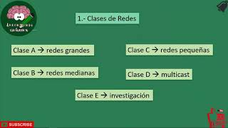
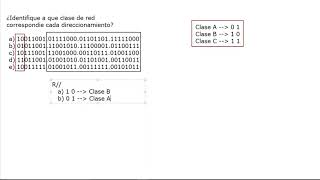
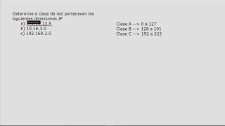
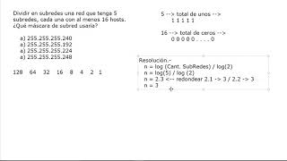
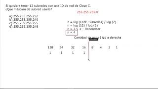

Subnetting o Subneteo
Curso

Lo que debemos saber
En este video aprenderemos la teoría necesaria para poder resolver los ejercicios
¿Qué aprenderás?
- Tipos de redes
- Fórmulas
- Para calcular los hots
- Para calcular las subredes

Direccionamiento
En este video se identificará el tipo de red mediante IPs en Binario

Distinguir mediante la IP a que clase de red pertenece
En este video se identificará el tipo de red mediante IPs en Hexadecimal

Dividir una red en subredes con sus determinados hosts
En este video se encontrará la máscara de subred de una IP determinando la cantidad de subredes y hots

Qué mascara de subred debe usar una ID con 12 subredes
En este vide se encontrará la máscara de subred de una ID de red de Clase C